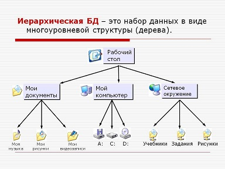

Типы систем управления базами данных и их преимущества

Flat File
База данных с двумерными файлами. Двухмерная модель наиболее простая. Каждая строка текста содержит одну запись обычно через запятую. Также могут быть использованы другие разделители. База данных может содержать записи без ссылок между ними. Она не может содержать несколько таблиц, как в реляционных БД. Для реализации двумерных файлов используется электронная таблица или текстовый процессор. Примерами базы данных с двумерными файлами являются Excel и filemaker.
Преимущества: -Все записи хранятся в одном месте. Простая структура. -Хорошо работает для небольших баз данных и имеет минимальные программные и аппаратные требования.

Иерархическая
Иерархическая база данных состоит из записей, которые связаны друг с другом. Каждая запись-это набор полей, каждое из которых содержит одно значение. Иерархическая база данных устроена таким образом «родитель-ребенок». Для лучшего понимания, представьте, что это перевернутая елка. Иерархическая база данных представлена в виде коробки. Отношения между родителем и ребенком может быть один-к-одному или один-ко-многим". Родитель может иметь или не иметь стрелку, указывающую на ребенка, но ребенок должен иметь стрелку, указывающую в направлении своего родителя. Иерархическая база данных может не справиться с такой структурой данных как «многие-ко-многим», для них применяются реляционные базы данных. Примером иерархической базы данных является программа adabas (Адаптируемая база данных).
Преимущества:
-Так как большинство связей имеют тип "один к одному", структура базы данных проста для понимания даже для непрограммистов. После нахождения первой записи, вам не нужно делать просмотр индекса. Вы можете просто следовать за родителями, по указателям, которые направят вас к следующей записи.
-Так как данные хранятся в единой базе, просматривать их становится легче. Модификации, если таковые имеются, могут быть легко добавлены в файл, заменяя существующие данные.
-Иерархическая база данных легка для администрирования и поддержания путем изменения записей в соответствующих областях.

Реляционная
Реляционная база данных - это набор элементов, организованных в таблицы, состоящие из строк, называемых записями, и столбцов, называемых полями, с которых данные могут быть доступны в любое время. Реляционная база данных может быть доступна с использованием языков запросов таких как SQL. Запросы используются для создания, изменения или извлечения данных.
В реляционной базе данные как правило, хранятся в виде таблиц. Каждая таблица имеет первичный ключ. В первичный ключ используется как уникальный идентификатор для каждой записи. Никакие две записи не могут иметь одинаковый первичный ключ. Понятие внешние ключи используется для установления отношения между двумя или более таблицами. Внешний ключ - это поле одной таблицы, который однозначно определяет строку в другой таблице. Он используется для перекрестных ссылок и связывание данных между таблицами. Примерами реляционной базы данных являются MySQL и SQL.
Преимущества:
-Права пользователя могут быть ограничены в зависимости от того, какие данные должны быть видимыми или модифицируемыми. Это предоставляет большую безопасность.
-Для работы с иерархической базой данных, необходимо открыть корневой каталог. В отличие от этого, реляционная база данных дает большую гибкость доступа.
-Можно избежать дублирования данных, таким образом, это уменьшит размер базы данных. Это снижает требования к памяти и повышает работоспособность.
Сетевая
Сетевая база данных была создана для представления сложных данных более эффективно. Она похожа на иерархическую модель, но в этом случае потомок может иметь несколько родителей и наоборот. Она формирует общее граф или сеть иерархий.
Схема, подсхемы, и язык управления данными являются ключевыми компонентами этой базы данных. Схема является концептуальным представлением базы данных в то время как подсхемы, содержат данные в базе данных. Язык управления данными определяет характеристики и структуру данных для того, чтобы манипулировать данными. В конечном итоге она была заменена на реляционную модель, что сделало хранение и изменение данные одновременно более простым. Примеры систем сетевых базы данных включает интегрированное хранилище данных (IDS) и интегрированные системы управления базами данных (IDMS).
Преимущества:
-Как и в иерархической базе данных, компоненты сетевой базы данных могут иметь несколько-родительских отношений.
-Так как всегда есть связь между родителем и потомком, целостность данных сохраняется.
-База данных тратит меньше времени на ведение учета устранения избыточных таблиц, что повышает эффективность и общую производительность.
Объектно-ориентированная
Как видно из названия, это база данных, состоит из объектов, используемый в объектно-ориентированном программировании. Эти базы данных хорошо работают с объектно-ориентированными языками, такими как Perl, C++, Java, smalltalk и другие.
Похожие объекты группируются в класс и каждый объект определенного класса, называется экземпляром. Классы позволяют программисту определять данные, которые не включены в программу. Так как классы определяют только те данные, которые запускаются, они не смогут получить доступ к другим данным, таким образом исключается возможность повреждения данных и обеспечивается безопасность. Классы обмениваться данными между собой через сообщения, называемые методами. Они имеют свойство наследования, которое означает, что если класс определен, подкласс может наследовать свойства, не определяя его собственные методы. Это означает, что подкласс может реализовать тот же код. Это ускоряет разработку программ. Примеры объектно-ориентированных систем баз данных включают Versant.
Преимущества:
-Классы позволяют группировать объекты, имеющие сходные характеристики. Суперклассы могут быть созданы для объединения всех классов. Это приводит к уменьшению избыточности данных и возможности повторного использования класса, что позволяет упростить обслуживание данных.
-База данных может хранить различные типы данных, такие как аудио, видео, изображения, и т.д.
Язык запросов может быть не нужен, так как все изменения происходят прозрачно при доступе к объектам.
Многомерная
Многомерная база данных тесно связана с оперативной аналитической обработкой, которая является частью бизнес-аналитики и хранилища данных. Интерактивная аналитическая обработка (OLAP) позволяет легко извлекать и просматривать данные через разные точки. Она может быть использован для доступа к многомерным данным. Многомерные базы данных могут быть визуализированы в виде кубов данных, представляющих различные размеры имеющихся данных. Она сочетает в себе преимущества иерархических и реляционных баз данных. Примеры многомерных баз данных включают Oracle Essbase и Microsoft SAS.
Преимущества:
-Она отвечает на запросы быстрее, чем реляционные базы данных, за счет многомерного индексирования и оптимизированного хранения.
Вывод многомерных баз данных имеет табличный вид, который не достижим в случае реляционных баз данных.
Объектно-реляционная
Объектно-реляционная база данных предлагает лучшее из обоих миров. Она обладает всеми преимуществами реляционной базы данных в сочетании с понятиями объектно-ориентированного программирования, такими как объекты, классы, наследование и полиморфизм. Она функционирует аналогично реляционным базам данных. Примеры включают IBM DB2.
Преимущества:
-Она может легко получать данные через полиморфизм. Повторное использование данных становится проще.
-Поскольку она вбирает в себя лучшее из реляционных и объектно-ориентированных баз данных, масштабируемость - не является для нее проблемой. Внутри классов могут храниться огромные объемы данных.
Гибридная
Гибридная система представляет собой комбинацию из двух или более баз данных. Гибриды используются, когда один тип базы данных не является достаточным для обработки всех запросов. Она поддерживает хранение и на диске, и в памяти. При доступе к базе данных используется оперативная память, в то время как для хранения основной базы используется диск. При использовании оперативной памяти повышается производительность, в то время как данные на диске более долговечны и экономичны. Гибридная база данных сочетает в себе оба этих преимущества. Примеры включают ALTIBASE HDВ.
Преимущества:
-Гибридная конструкция предназначена, чтобы пожинать преимущества двух или более типов баз данных, из которых она составлена.
-Извлечение данных из памяти вместо диска, делает операции намного быстрее. Это дает гибридным базам данных высокий балл по производительности.
Это были различные типы систем управления базами данных. Каждый Тип имеет свои преимущества, но решающим выбором является та, которая наилучшим образом подходит для конкретной организации и зависит от характера и объема данных, которые она должна обрабатывать.